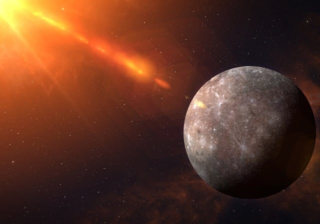

Mercury
Mercury is the smallest planet in the Solar System and the closest to the Sun. Named after the ancient Roman god of commerce — speedy Mercury, as it moves across the sky faster than other planets. Its orbital period around the Sun is only 87.97 Earth days - the shortest among all the planets of the Solar System.
Mercury's distance from the Sun, when viewed from Earth, never exceeds 28°. This proximity to the Sun means that the planet can only be seen for a short time after sunset or before sunrise, typically during twilight. Through a telescope, Mercury exhibits phases ranging from a thin crescent to nearly a full disk, like Venus and the Moon, and sometimes it passes across the face of the Sun. The period of Mercury's phase change equals the synodic period of its orbit - approximately 116 days.

Astronomical Characteristics
The average distance of Mercury from the Sun is just under 58 million km (57.91 million km). The planet orbits the Sun in 88 Earth days. Mercury's apparent visual magnitude varies from −2.43 to 5.5 at its inferior and superior conjunctions, and it is difficult to observe due to its proximity to the Sun.
Mercury belongs to the terrestrial planets group. It resembles the Moon in its physical characteristics. It has no natural satellites but possesses a very thin atmosphere. The planet has a large iron core, which is the source of its magnetic field, with an intensity of 0.01 times that of Earth's magnetic field. Mercury's core makes up 83% of the planet's total volume. The surface temperature of Mercury ranges from 80 to 700 K (from −190 to +430 °C). The side facing the Sun heats up much more than the polar regions and the planet's far side.

Exploration of Mercury
Mercury has been visited by two spacecraft: Mariner 10 flew by it in 1974 and 1975, and MESSENGER explored it from 2008 to 2015. The latter entered orbit around the planet in 2011 and, after making over 4,000 orbits around it in four years, ran out of fuel and crashed into its surface on April 30, 2015. It is planned that in 2025, the BepiColombo spacecraft will arrive at Mercury.

The radius of Mercury is only 2439.7 ± 1.0 km, which is smaller than the radius of Jupiter's moon Ganymede and Saturn's moon Titan (the two largest moons of planets in the Solar System). Despite its smaller radius, Mercury exceeds both Ganymede and Titan in mass. The planet's mass is 3.3×10^23 kg. Mercury's average density is quite high - 5.43 g/cm^3, only slightly less than Earth's density. Considering that Earth is much larger in size, Mercury's density indicates an elevated content of metallic core material. The acceleration due to gravity on Mercury is 3.70 m/s^2. Its second cosmic velocity is 4.25 km/s. Relatively little is known about the planet. Only in 2009 did scientists create the first complete map of Mercury using images from the Mariner 10 and MESSENGER spacecraft.
Origin Theory
The main hypothesis regarding the origin of Mercury and other planets is the nebular hypothesis. Since the 19th century, there has been a hypothesis that Mercury was once a moon of the planet Venus in the past and was later "lost." In 1976, Tom van Flandern and K. R. Harrington, based on mathematical calculations, showed that this hypothesis well explains the large elongation (eccentricity) of Mercury's orbit, its resonant character of revolution around the Sun, and the loss of angular momentum both in Mercury and Venus - the latter acquiring rotation opposite to the usual in the Solar System. According to another model, in the early stages of the formation of the Solar System, proto-Mercury almost tangentially collided with proto-Venus, as a result of which significant parts of the mantle and crust of early Mercury were scattered into space and then collected by Venus.